明治時代の跨線橋と使用されていない長大プラットHomeの秘密< 蔵本駅 / 徳島市 >
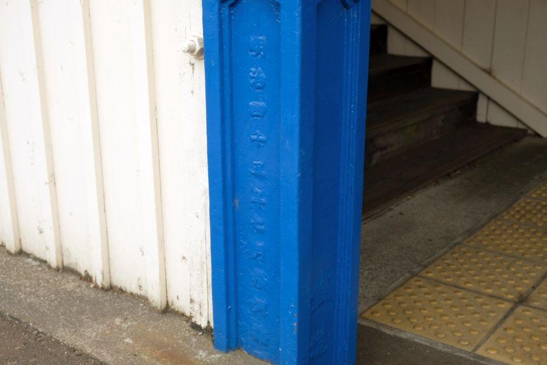
時代が明治になると、四国でも各地で鉄道敷設が進められていきます。「明治45年七月」と刻字されたこの橋柱は、比較的早い時代からこの地に鉄道がやってきたことを示すと共に、その当時から現存する貴重な鉄道資産となっています。
蔵本駅
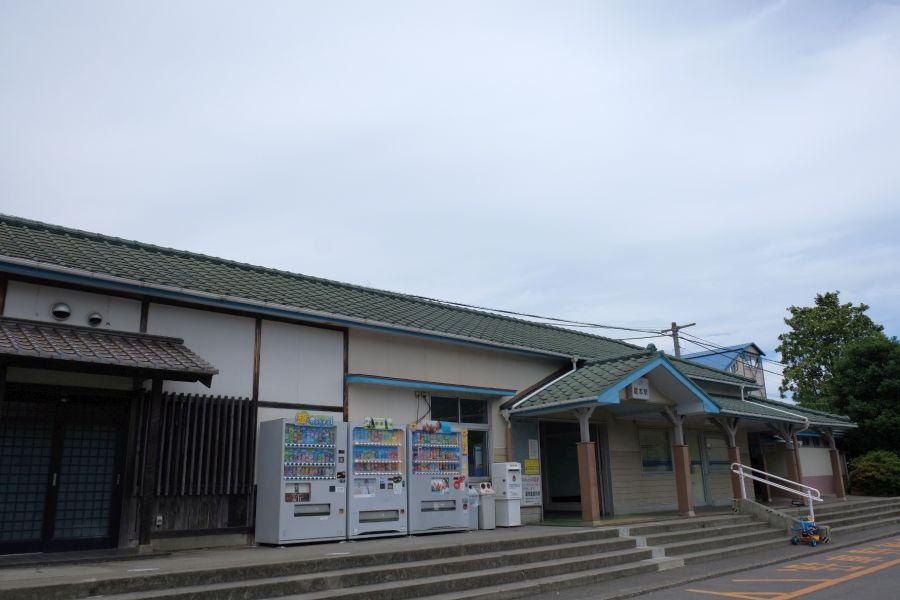
蔵本駅(くらもとえき/徳島市)
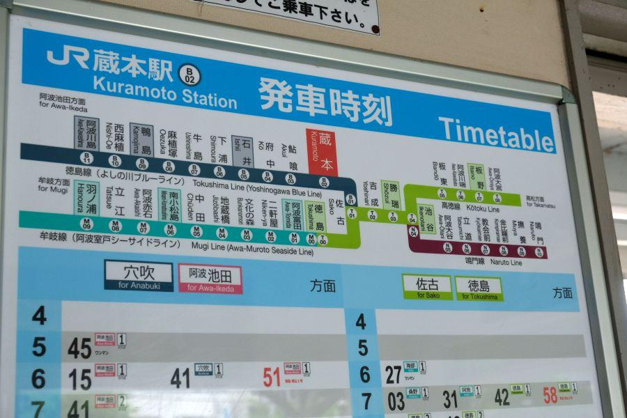
明治開業時由来の鉄道施設が現存する駅へは、徳島県の代表駅・徳島駅から二駅来たところ。
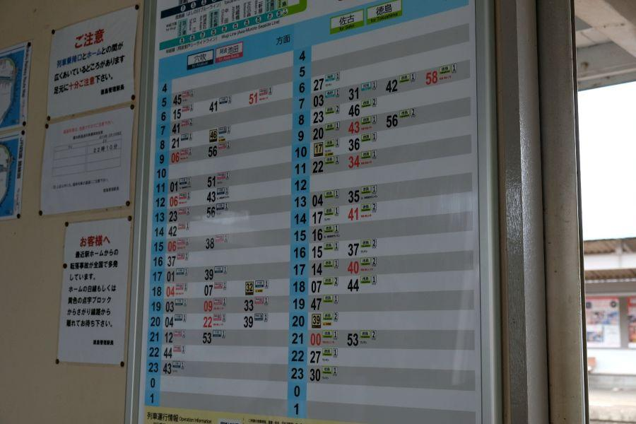
徳島市への通勤・通学エリアになるので、列車の本数は比較的多い。電車(＝動力はモーター)ではない気動車(＝動力はエンジン)だけが走る区間としては、全国屈指の列車本数を誇ります。
また、近くには大学病院などがあり、乗降客数は徳島県内有数。蔵本駅には特急列車も含め全列車が停車します。

蔵本駅の駅舎は年ごとに改修・改築が行われ近現代の装いとなっていますが、列車が発着するプラットHomeでは当駅の歴史を垣間見ることができます。
100年以上前から存在する跨線橋

現在は二面二線となっている蔵本駅。それらのプラットHomeを繋ぐ跨線橋があり、まずはそこに着目することにします。
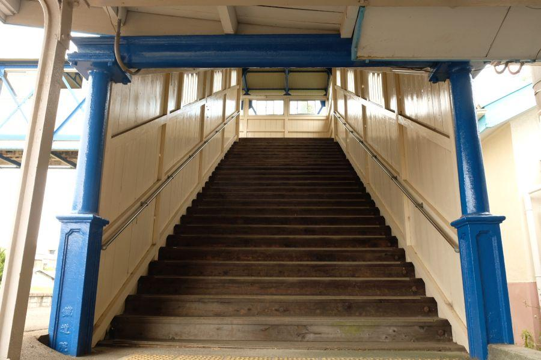
跨線橋の入口に立ってみます。青く再塗装された柱は鉄製、床・壁が木製。バリアフリーでなければ、エレベーターが備わっているわけではありません。昇降補助設備は手すりのみ。
それもそのはず、
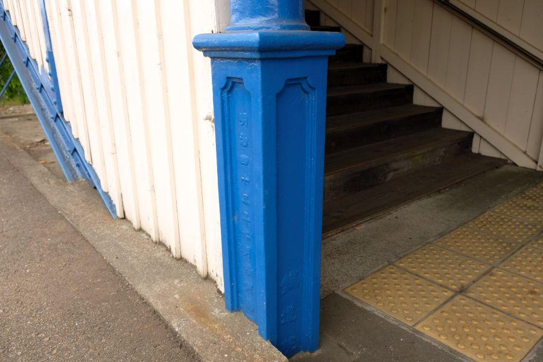
「明治四十五年七月 横河橋梁製作所」
「鐡道院」
明治45年は西暦1912年。明治最後の年であり、同年7月30日に明治天皇が崩御。元号が大正時代に改元されました。
また、スウェーデンのストックホルムで第5回オリンピック競技大会が開かれたのが同年同月。日本勢として初めての大会参加はアジア勢としても初出場。10000mに出場した金栗四三(かなくりしそう)氏のエピソードが大河ドラマの題材になり、近年有名になりました。
今から107年前の出来事ですが、この跨線橋はその当時から現存していることになります。
工部省鉄道寮
↓
逓信省鉄道局
↓
帝国鉄道庁
↓
内閣鉄道院
↓
鉄道省(省線)
↓
日本国有鉄道(国鉄)
↓
JR
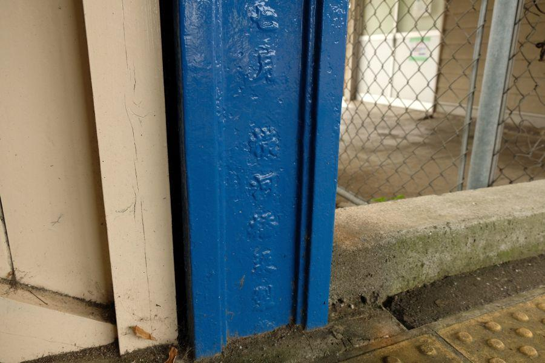
跨線橋の製作は「横河橋梁製作所」
現社名は「横河ブリッジ」。明治40年(1907)年創業、明治44年(1911)には鉄道院から橋桁製造工場に指定された橋梁における老舗メーカーであり、横浜ベイブリッジや明石海峡大橋。海外では当時占領地だったタイのクウェー川鉄橋等、近代橋の分野で数多くの施工実績があります。
蔵本駅の跨線橋は、同社が鉄道院指定工場を受けた翌年なので、まだまだ施工事例が少なかった時期と想像します。後年に世界を代表する橋梁を次々世に送り出したことを考えると、このような身近な建造物がその礎になったと言えます。
木造校舎のような雰囲気
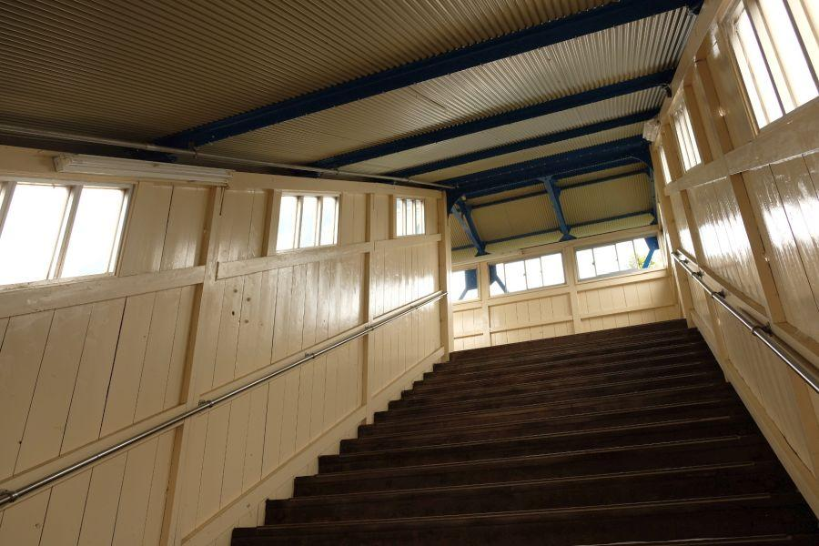
明治45年製の跨線橋を渡ってみることにします。
歩くと木の床板がギシギシと音を立てます。敷板・張板は時代時代で交換されていることでしょう。建物の雰囲気で言えば、昔あった木造校舎のような感じで懐かしい。
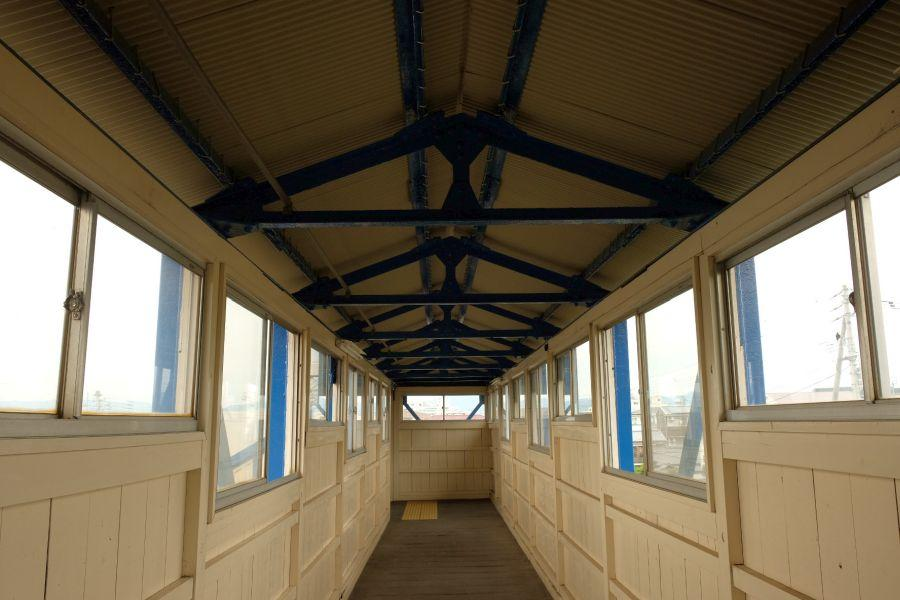
跨線橋のブリッジ部分
板で囲われ窓が設置されているので、橋の上から外の景色を眺めつつ、雨天時も濡れずに移動することができます。ぱっと見、大きさの異なる窓がいくつかあるように見えますが、これも今ではあまり考えられない事。同じ大きさのものを一括で発注する方が間違いなく手間とコストダウンになります。
剥き出しの鉄骨は竣工以来のもの。こちらの跨線橋と同じ年に架けられた山陰の餘部橋りょう(あまるべきょうりょう)が、橋脚はアメリカ、橋桁をドイツに発注したように、こちらの跨線橋の鋼材も、おそらく欧米からの輸入と察します。
国内で鋼材をまかなえるようになったのは、明治34年(1901)の官営八幡製鉄所の操業から、ずっと先の話。
長いプラットHomeの秘密
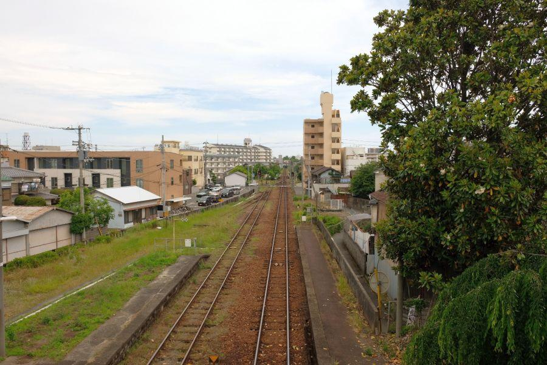
徳島方向を眺めたところ。
徳島駅へはここから二駅。中間にある佐古駅(さこえき)では、高松からの高徳線が合流します。
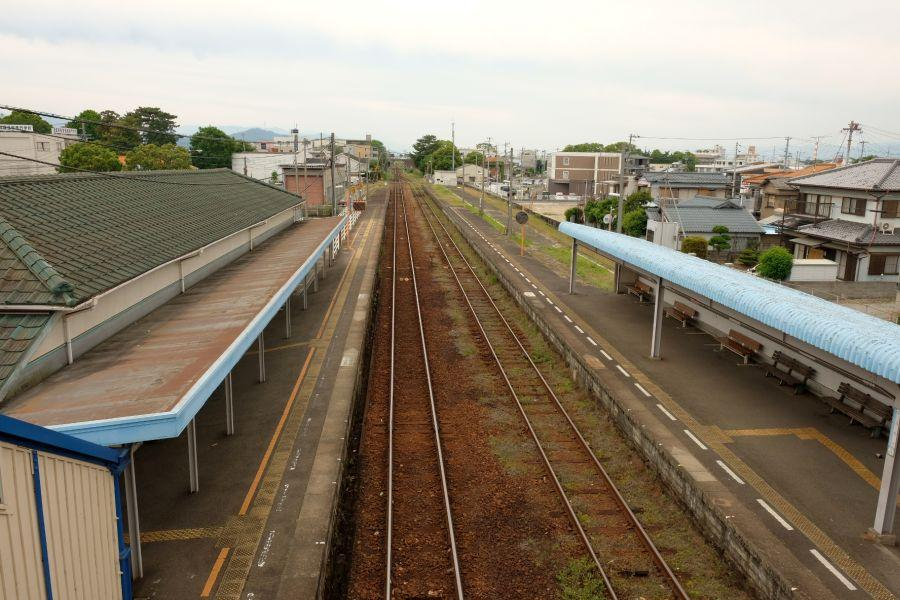
阿波池田方面を眺めたところ
周辺が住宅地であり、近くに大きな病院があって乗降客が多いのは間違いありませんが、それにしても中間駅としては明らかにオーバースペック。
このながーいプラットHomeの理由は、
蔵本に置かれた陸軍歩兵62連隊に由来します。蔵本駅へは陸軍関連の兵員輸送や、物資などの貨物輸送が行われる等、長大編成の列車が発着していました。非常に長いプラットHomeはそのためです。
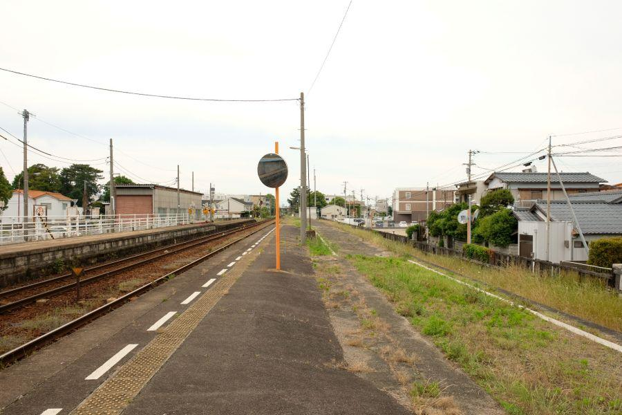
その長いプラットHomeの端、行けるところまで進んでみることにします。現在、蔵本駅が所属する徳島線は貨物が走っておらず、朝夕ラッシュ時の列車もせいぜい四両。
この場所まで来る乗客は、誰もいません。
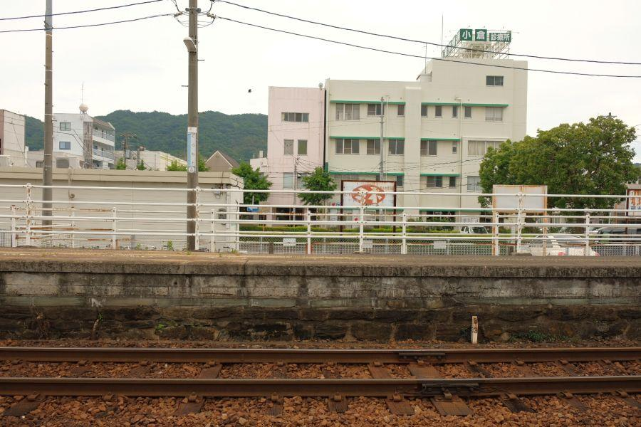
ここまで来たなら、使われていないプラットHomeの土台部分をお見逃しなく。駅開業当初の石積みHomeを土台として、コンクリートで増床されていることが分かります。
昔と今とでHomeの高さが異なるのは、昔の車両は機関車が引っ張る客車であり、床下にエンジンやモーターの装備が無かったため。列車の地上高が低かったので、それほど高いプラットHomeを必要としませんでした。
現代の列車の多くは機関車を必要としない分、各車両に動力機関を装着しなければならないのと、エアコンユニット等も加わって来るので、それらを床下か屋根上に装着しなければならず、地上高・車高が高い。客の乗降を行うためには、増床されたプラットHomeが必要になるわけです。
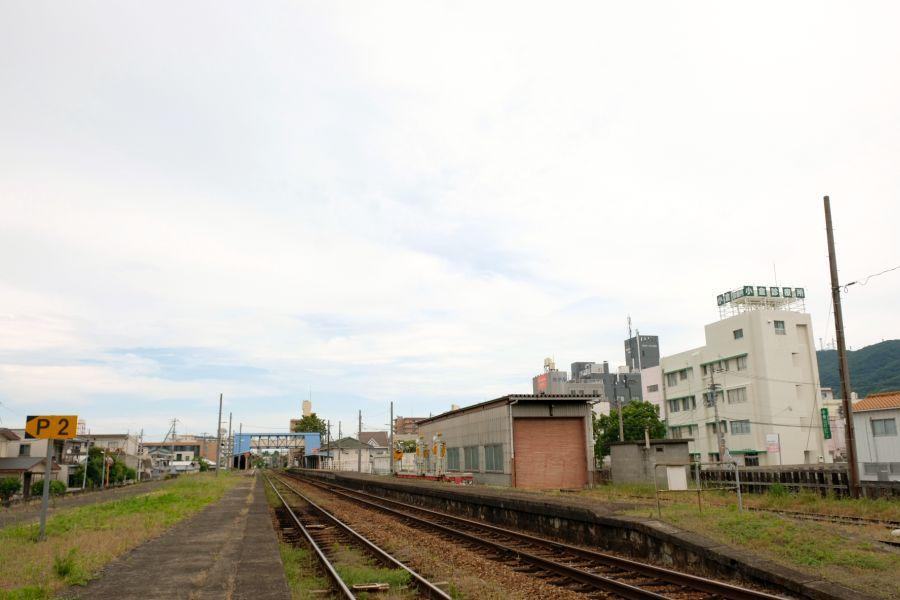
プラットHomeの端っこにやってきました。青い屋根が跨線橋。ここまで駅舎から100mは離れているでしょうか。
駅舎・跨線橋に近いところで、プラットHomeの色が異なる部分があります。現在の列車が発着しているのは、その辺りまで。雑草の生え方から見ても、残りは使用されていません。
この地に陸軍がやってきたのが明治41年(1908)の事。
それから終戦までの間に連隊の廃止や再設置、加茂名から蔵本への移転等の変遷がありましたが、蔵本は「兵隊さんの街」であり続けた。戦前は軍隊が何においても優先され、あらゆる面で大きな影響力を持っていたでしょうから、この場所が人・物が集まる、事実上の「徳島の中心」でもあったことでしょう。
旧陸軍用地は戦後「蔵本運動公園」となり、「徳島大学医学部・蔵本キャンパス」、「加茂名中学校」等に転用されています。
再び明治45年製の跨線橋へ
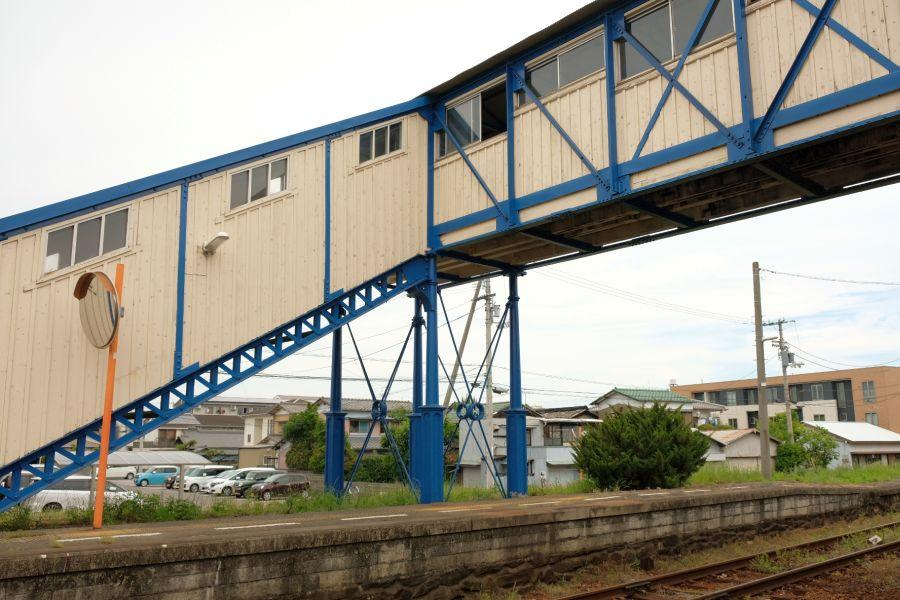
再び跨線橋に戻ってきました。四本の脚と斜めの補強材(もう一方のHomeにも同じものがある対象デザイン)が、明治由来のブリッジを支えます。
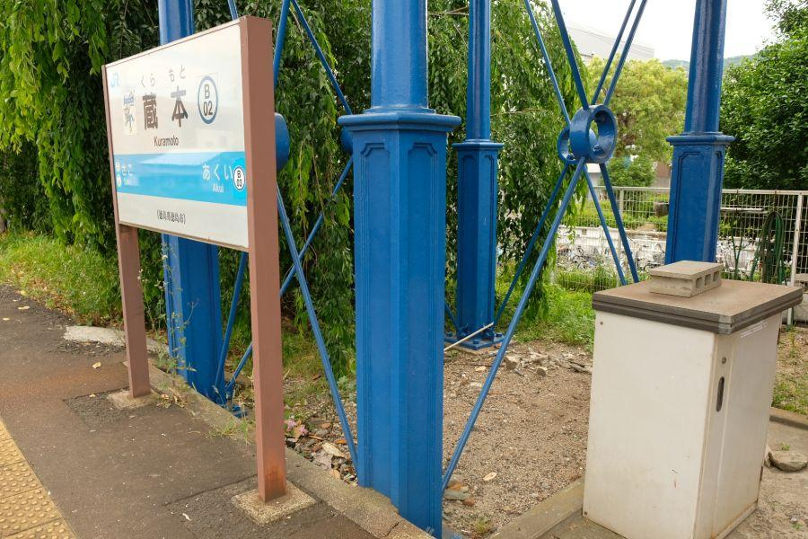
近年再塗装が行われ、そのカラーリングには正直...なところですが、意匠が凝らされた柱の根元に、真面目なものづくりを感じることができます。
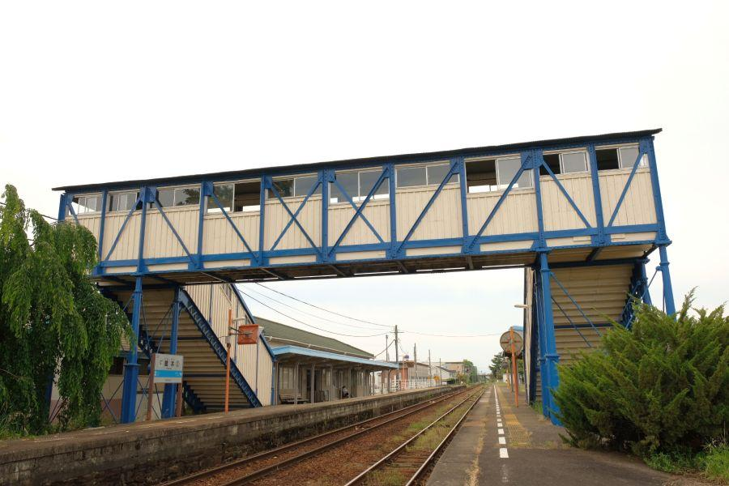
裏側から見る跨線橋
鉄骨と木材を用いて製作された跨線橋の形が、よく分かります。ここもまた、乗客が来ない部分。
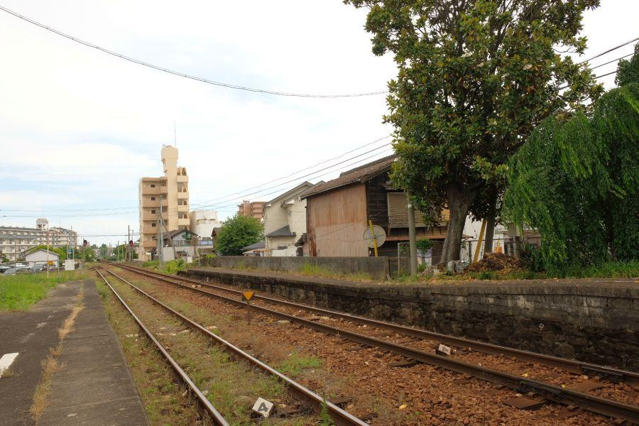
徳島側のプラットHomeの端。
阿波池田側と同じく、増床が行われたり、そうでなかったり。
これだけの規模の駅なので、往時の長大編成列車が発着していた頃の様子が見れない物かとインターネット上で調べてみましたが、そのような写真は見つかりませんでした。
おそらくですが、蔵本駅周辺には軍事施設が数多く存在していたことから、撮影や写生などの記録行為が一切禁止されていたのではないかと思います。
蔵本駅
< 自家用車 >
高松駅から 約1時間10分、63km
徳島阿波おどり空港から 約40分、16km
< 公共交通機関 >
JR徳島線蔵本駅下車
※ 主な地点からの最速・最短距離